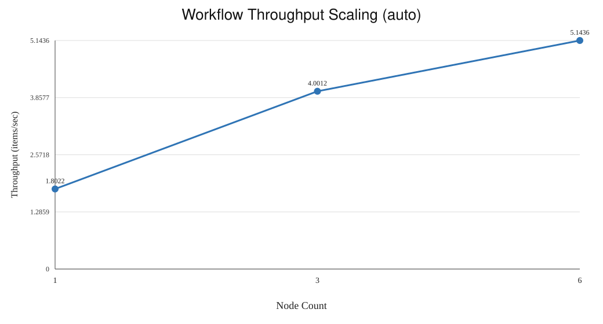
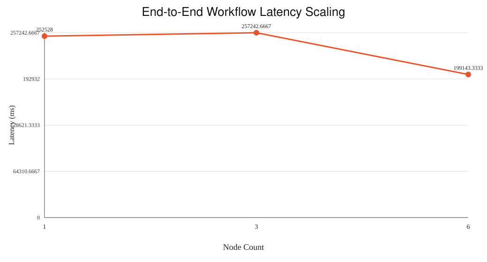

M6 Workflow Scaling
Generated: 2026-04-21T08:51:57.971Z
Seed: https://atlas.cs.brown.edu/data/gutenberg/
Experiment: m6_scaling_20260421_032502
Throughput Metric: auto
Throughput vs Node Count

Latency vs Node Count

Aggregated Metrics
Nodes
Successful Runs
Throughput Mean (items/s)
Throughput Stddev
Latency Mean (ms)
Latency Stddev (ms)
1
3
1.8022
1.2744
252528
178561.5523
3
3
4.0012
0.2804
257242.6667
18862.5548
6
3
5.1436
0.09
199143.3333
3528.8605